Tune with InSight
Loop Tuning Overview
Once a control loop is designed and configured to govern a process it must be tuned. Making the necessary adjustments to provide for stable and responsive operation of the process is referred to as loop tuning. If a loop is tuned for responses that are too slow, the process is stable but not responsive. If the loop is tuned for responses that are too fast, it can be very responsive, but it might overshoot and cycle around the setpoint (SP). The objective is to achieve a reasonably responsive and stable control loop.
The most common methods of loop tuning are calculated tuning and trial and error tuning. The calculated method involves computing the tuning values using known constants and algorithms. The trial and error method involves manually adjusting the tuning values until the process is stable. The calculated method is superior to the trial and error method because it requires a small number of cycles to achieve the desired results. If a process is slow, using the calculated method can be extremely advantageous to using the trial and error method.
InSight provides three approaches to loop tuning:
- On-Demand Tuning - Uses an on-demand test of the process to automatically provide tuning recommendations. On-Demand tuning is available for PID and Fuzzy Logic Control blocks. Tuning recommendations are available on-demand by initiating automatic testing of the process. When testing is requested using On-Demand tuning, the PID or FLC block's actual mode switches to Local Override (LO). Once in LO mode, the operation of the loop's primary control algorithm is suspended and the controller resident relay identification adjusts the control block output (OUT). The On-Demand tuning capability is based on the patented Aström-Hägglund Algorithm for calculating the tuning parameters of a process control loop. Emerson has enhanced this algorithm with a patented technique for identifying process deadtime. During tuning, the output of the Proportional Integral Derivative (PID) or Fuzzy Logic Control (FLC) block that is selected for tuning is determined by a known function that acts as a relay with hysteresis. This relay provides two-state control and causes the process to oscillate with a small, controlled amplitude. Using the amplitude and the frequency of this oscillation, InSight calculates the Ultimate Gain and Ultimate Period of the process. The controller settings are then computed based on the defined process parameters and selected process type. Optionally, tuning rules for modified Ziegler-Nichols, Lambda, or Internal Model Control can be selected in determining the best loop tuning. Process Learning does not need to be enabled to use On-Demand tuning.
- Adaptive Tuning (open loop) - Uses normal operator changes in setpoint or output to identify process models and provide tuning recommendations. When automatic model identification is requested using Adaptive Tuning, there is no impact on the block mode and block mode is based on normal operating conditions. DeltaV InSight learns the process by continuously evaluating your plant performance, evaluating controller tuning, and calculating process models based on normal day-to-day operations. Process Learning must be enabled for model creation.
- Adaptive Control (closed loop) - Includes all of the Adaptive Tuning capabilities plus the ability to create models in up to 5 regions and to automatically change control loop tuning. The model quality is validated by taking into account the most recent adaptation and the last several adaptations. A high quality model and the expected operation with the recommended tuning is used as criteria for setting Adaptive Control. An Adaptive Control license is required for full or partial Adaptive Control and to create models in up to 5 regions. Adaptive Control licenses can be assigned to PID blocks that reside in the controller. PID blocks residing in the H1 card and in fieldbus devices cannot be licensed for full or partial Adaptive Control. Process Learning must be enabled for model creation.
- Partial Adaptive Control - the controller calculates new models and tuning for each region and adjusts closed loop tuning based on the approved models for each region. The controller adjustments are made only for models the user has reviewed and approved.
- Full Adaptive Control - the controller calculates new models and tuning for each region and automatically adjusts closed-loop tuning based on the last model calculated for each region. No user review or approval is required for Full Adaptive Control.
Process Learning
If Process Learning is enabled on a PID block assigned to the DeltaV Controller, the process model and recommended tuning are automatically calculated in the controller and a copy is transferred to the ProfessionalPLUS workstation. The models are used for both Adaptive Tuning and Adaptive Control. Process Learning can be enabled on:
- PID blocks running in the controller. The blocks can be licensed for Adaptive Control.
- PID blocks assigned to an H1 card. These blocks cannot be licensed for Adaptive Control.
- PID blocks running in fieldbus devices. These blocks cannot be licensed for Adaptive Control.
- FFPID_RMT blocks running in device. These blocks cannot be licensed for Adaptive Control.
InSight Architecture
DeltaV InSight is distributed between the DeltaV workstation and the DeltaV controller. Time-critical features associated with the process identification are implemented in the function block. This approach allows the process dynamics to be captured precisely without introducing errors by communication delays. The portion of InSight in the workstation supports viewing controller parameters and tuning calculation based on the process dynamics captured by the PID or FLC function block. You can enable Process Learning or initiate on-demand tuning if you have sufficient privilege at the DeltaV workstation being used to view and interact with DeltaV InSight. You can initiate closed loop Adaptive Tuning if you have sufficient privilege at the workstation and if PID blocks are licensed for Adaptive Control.
To check and allow further refinement of tuning, InSight provides simulated loop response, robustness plotting, and robustness based tuning.
Algorithms
The following sections describe the Adaptive Tuning and On-Demand Tuning algorithms. Understanding these algorithms is not required to use the InSight applications and this information is provided for reference only.
Adaptive Tuning Algorithm
The process identification algorithm included in the PID Function Block Adapt Modifier addresses the shortcomings of many Adaptive Control products. Specifically, the PID Function Block Adapt Modifier provides adaptation for feedback control. The model switching strategy used for identification incorporates parameter interpolation and model re-centering that makes it possible to dramatically reduce the number of models used for adaptation. Salient features of the technology include: shorter adaptation time, complete process model identification, and reduction in required process excitation.
The main objectives of the algorithm design are to:
- Provide a unified solution for feedback model identification
- Achieve a shorter adaptation time
- Achieve adaptation with minimal excitation of the process
The structure of the PID Function Block Adapt Modifier with model parameter interpolation is shown below.
The process identification design is based on the evaluation of multiple sets of models. In principle, a model can have any form, but in this implementation, each model consists of three parameters. All models have the same three parameter structure. Assigning n values for every parameter, the model set has N = n3 models.
The Adaptive Control operates in the following way:
The supervisor detects changes in:
If changes on any input exceed a user-defined minimum level, model evaluation starts. It involves several steps:
- Model initialization and adjustment of the model's output with the current process output
- Model incremental update based on the changes of the manipulated input to the process
- Computing for every model squared error:
For each iteration, the squared error Ei(t) is computed for every model i each scan
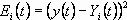
Where:
y(t) = the process output at the time t
Yi(t) = i-th model output
The norm, shown in equation 1, is assigned for every parameter value of the model i, if the parameter value is used in the evaluated model. A zero is assigned to any parameter value that is not part of the evaluated model. Next, the model i+1 is evaluated, and again the norm (defined in equation 1) is computed for the model and assigned for every parameter value of the model i+1 and added to the previously assigned norm for every parameter value. The process continues until all models are evaluated. As a result of the evaluation, every parameter value is assigned a sum of squared errors from all models in which this specific parameter value has been used. In the one scan t therefore, every parameter value
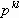
,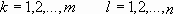
has assigned norm
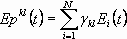
Where:
k = parameter type
l = parameter value
Epkl(t) = the evaluation norm of the parameter pkl at the scan t
N = the number of models
Ykl = 1 if parameter value pkl is used in the model, otherwise = 0
Model evaluation is repeated in the scan t+1 and the sum of the squared errors for every parameter value is added to the sum of the appropriate parameter value accumulated in the previous scans. The adaptation cycle continues through a declared number of scans (1 to M), or until there is enough excitation on the inputs. As a result of this procedure, every parameter value pkl is assigned the accumulated value of the squared errors over a period of evaluation:
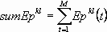
At the end of the adaptation cycle, the inverse of the sum is calculated for every parameter value pkl:
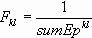
An adaptive parameter value pk(a) for the parameter pk is calculated as a weighted average of all values of this parameter:
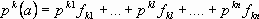
Where:
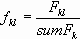
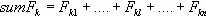
Calculated parameters define a new model set with center parameter values pk(a), k = 1,…m and the range of parameter changes defined as ±Δ%. Within that range, two parameters at a minimum should be defined. Practically, two additional parameters, pk(a) + Δ%pk(a)/100 and pk(a) – Δ%pk(a)/100, are defined around the parameter pk(a). Every parameter defines a lower and upper limit for adaptation and if pk(a) exceeds the limit, it is clamped to the limit. As soon as a model has been updated, controller redesign takes place based on updated pk(a), k = 1,…m model parameters.
The adaptation process is shown by simply considering a pure gain process. The process input is assumed to be changing as shown in the following figure.
For an assumed initial process gain value of G1, the bank of process models that will be evaluated in the first iteration will have gains of G1 – Δ, G1, G1 + Δ. Based on the calculated process output and actual process output for each model, a new gain value estimate, G2, is computed and a new model bank G2 – Δ, G2, G2 + Δ is centered around G2. It is used in the second iteration of the adaptation. This process continues as shown below, until further reduction in the norm (shown in equation 1) is within a defined limit or the maximum number of iterations has been completed. The range ∆ is decreased after each iteration.
A first order plus deadtime process model, in a discrete form, is used to describe the process response to changes in the manipulated input or the disturbance input in the PID Function Block Adapt Modifier.
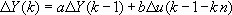
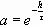
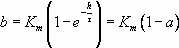
Where:
h = loop scan period
Δu = process input incremental change since adaptation started
ΔY = model incremental change
t = model time constant
With three values for every parameter of the model, there are 33 = 27 models for evaluation.
Improved convergence and reduction in the number of models is achieved by the following amendments to the basic algorithm:
- Performing parameter adaptation sequentially, one parameter at a time. In this way, the number of model combinations for the first order plus deadtime model has been reduced to 3+3+3=9.
- Performing adaptation for only two parameters with minimum error values.
- Using the original data set and performing adaptation iteratively by running the algorithm several times.
In a sequential procedure in which one parameter is updated over a calculation cycle, the updating is performed in the sequence process gain (Km), deadtime in scans (n), and time constant (t=f(a)).
The adaptation example for a first-order plus deadtime process with a changing input is shown below.
The following two figures show the sequential procedure of updating one parameter at a time over a calculation cycle.
After model adaptation completes, controller redesign begins. Since a complete first order plus deadtime process model is used, any tuning rules (Lambda or IMC tuning, typically) can be applied. You can select the tuning rule that the PID Function Block Adapt Modifier uses with the process model to set the feedback tuning.
If there are infrequent changes in the manipulated input, external excitations can be optionally automatically injected into the manipulated input in Automatic modes. An output change of 3-7% is normally enough for a process model identification. The following figure shows the typical process response for this level of excitation.
The following trend shows the step response of a caustic flow loop that is controlled by Adapt. Notice how the initial tuning is automatically refined during normal block operation in Automatic mode at the setpoint changes.
On-Demand Tuning Algorithm
On-Demand tuning can be used to establish loop tuning based on the process parameters identified using the supervised relay oscillation test. The On-Demand tuning feature of InSight uses modified Ziegler-Nichols model-based tuning rules. The following image shows how the On-Demand tune modifier is used with the PID block to provide the On-Demand tuning capability.
The On-Demand tune modifier identifies the process dynamics using the relay oscillation principle. During the identification procedure of loop tuning, the mode of the PID or FLC block changes to LO and the output is determined by a two-state (or relay) function. During this phase of tuning, the loop is under two-state control. As indicated previously, loops under two-state control exhibit slight oscillations. The amplitude of these oscillations defines the Ultimate Gain. The oscillation period defines the Ultimate Period.
The Ultimate Gain (Ku) is defined by the following equation:
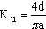
Where:
d - relay amplitude
a - amplitude of the oscillation of the process variable (PV)
Having identified the Ultimate Gain and the Ultimate Period, you can determine the controller PID settings using the modified Ziegler-Nichols rules. You can also determine the process deadtime based on the initial phase of the oscillation test. Based on a knowledge of the deadtime, Ultimate Gain, and Ultimate Period, InSight can calculate the process time constant and static gain needed for model-based tuning (Internal Model Control tuning and Lambda tuning) available in InSight as options.
Tuning Period
The following figure illustrates a typical time plot of the relay output and the process variable (PV) during tuning. Note that the relay is triggered at the point when the PV passes through the SP.
The relay amplitude (d) is typically 3 to 10 percent of the controller output range. For a DeltaV control block, this corresponds to the percent change in OUT. The PV change (a) is largest during initialization (that is, during the first oscillation period). Typically, the PV change ranges from 1 to 3 percent of the PV range.
Oscillations must continue for at least one period after initialization. If more periods are used for tuning, the average amplitude of the oscillations is used to determine the Ultimate Gain. InSight uses two tuning periods by default and defines the amplitude of the oscillations as the average amplitude.
During the oscillation periods after initialization (the tuning periods), relay switching is disabled at the start of each half period to increase the tuner's resistance to noise. The duration that the relay switching is disabled depends on the deadtime of the tuned loop, which is defined during the initialization period.
Relay Hysteresis
For very noisy processes, you can adjust the amount of relay hysteresis for additional noise protection. With hysteresis, the relay switches only if the PV passes through the SP by a specified amount.
Under stable conditions, the relationship of input and output can be expressed by the transfer function. Generally, a process transfer function can be represented by a magnitude (or amplitude) and an angle (or phase shift). When the frequency varies from 0 to infinity, the transfer function changes. The resulting curve is called the Nyquist curve. The following figure shows a typical Nyquist curve for a control loop at the tuning.
For a relay with hysteresis, the describing function, N(a), defines the relationship between the relay input and the output.
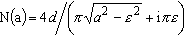
Where:
N(a) is the describing function of the relay.
ε is the relay hysteresis.
d is the relay amplitude.
a is the amplitude of the oscillation of the process variable (PV).
i is the imaginary component.
N(a) amplitude is considered an approximation for the Ultimate Gain. Note that with hysteresis, ε=0, N(a) is exactly the Ultimate Gain, as shown in the above formula.
However, with hysteresis, the frequency and gain determined by the oscillation are not exactly the Ultimate Period and the Ultimate Gain. As illustrated in the above figure, the hysteresis introduces an error in defining the critical point of the Nyquist curve.
To prevent the introduction of additional errors, only set the relay hysteresis when InSight will be operating in an extremely noisy environment.